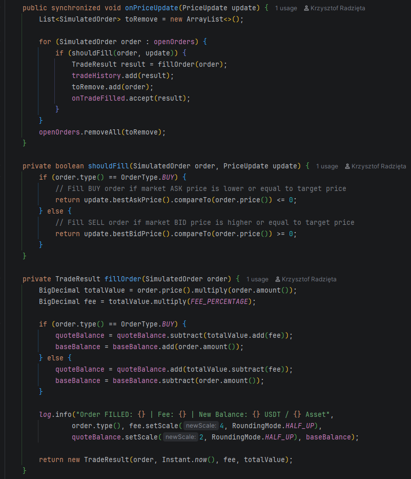
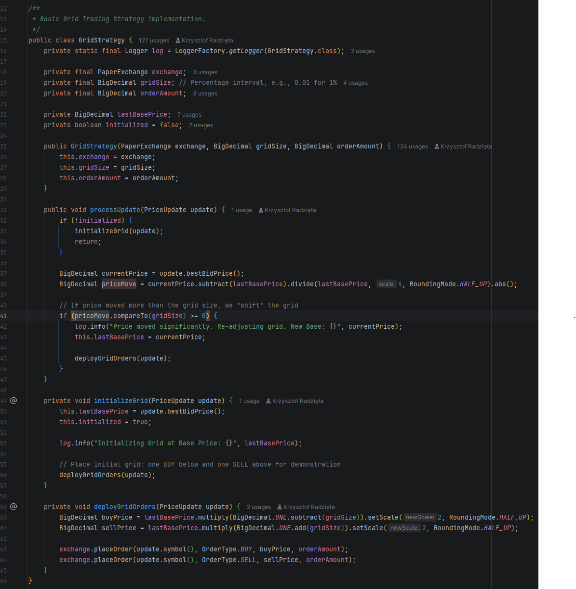
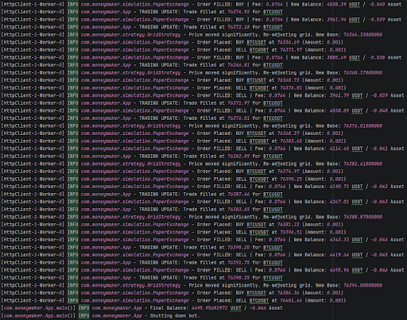

Zautomatyzowana, asynchroniczna strategia handlowa zaprojektowana do maksymalizacji zysków z rynkowej zmienności w środowisku Java 21.
Grid Trading to strategia ilościowa, która polega na wystawianiu serii zleceń kupna i sprzedaży w regularnych, z góry ustalonych odstępach cenowych (tworząc tzw. siatkę).
Głównym założeniem tej metody jest brak konieczności przewidywania kierunku rynku. Bot z góry zakłada, że cena będzie oscylować w górę i w dół.
Klasyczny Grid Trading cierpi na jedną wadę: jeśli cena drastycznie wzrośnie lub spadnie poza ustalone widełki, bot "zamraża" środki i przestaje handlować. MoneyMaker rozwiązuje ten problem.
Wdrożyliśmy mechanizm Perpetual Grid. Nasz algorytm dynamicznie przesuwa bazę odniesienia (Base Price) w ślad za dominującym trendem rynkowym.
Jeśli cena kryptowaluty zacznie gwałtownie uciekać w górę, bot automatycznie "goni" ją, przestawiając całą siatkę zleceń wyżej. Dzięki temu algorytm zawsze znajduje się w centrum akcji i generuje zyski, niezależnie od tego, czy rynek pnie się do góry na przestrzeni dni, czy miesięcy.
Wykorzystanie najnowszego środowiska wykonawczego. Architektura gotowa na równoległą obsługę tysięcy par walutowych bez blokowania procesora.
Użycie java.net.http.WebSocket. Bot reaguje natychmiast, asynchronicznie odbierając strumień danych z giełdy bez odpytywania API.
W tradingu nie ma miejsca na przybliżenia. Odrzucenie double/float eliminuje groźne błędy zaokrągleń w obliczeniach finansowych.
Profesjonalny, ustandaryzowany system logowania zdarzeń, gwarantujący pełną ścieżkę audytową każdej transakcji algorytmu.
System testowy bota (tzw. Paper Trading) został zaprojektowany z naciskiem na maksymalny realizm. Zdecydowaliśmy się nie zakłamywać wyników i uwzględniać realne prowizje giełdowe w każdej transakcji.
fillOrder każda symulowana transakcja ma precyzyjnie odjętą prowizję rzędu 0.1% (standard giełdy Binance).BigDecimal, z uwzględnieniem precyzyjnego skalowania matematycznego (RoundingMode).Na następnym slajdzie: Fragment kodu odpowiadający za potrącanie prowizji.

Klasa GridStrategy odpowiada za analizę i interpretację przychodzących sygnałów z WebSocketa. To tutaj bot podejmuje decyzję o tym, czy ruch cenowy jest na tyle istotny, aby podjąć akcję handlową.
priceMove.compareTo(gridSize) >= 0 sprawdza, czy bezwzględna zmiana ceny przekroczyła ustalony rozmiar siatki (np. 0.5%).Na następnym slajdzie: Główny mechanizm analizy ruchu ceny.

Podczas krótkiej sesji demonstracyjnej uruchomiliśmy bota z kapitałem początkowym 1000 USDT. Wyniki pokazują, jak algorytm radzi sobie w warunkach gwałtownych ruchów (tzw. flash-crash / pompa).
Order FILLED: BUY. Cena spadała, a bot posłusznie kupował taniej, budując pozycję.Order FILLED: SELL. Bot zaczął dynamicznie wyprzedawać zakumulowane aktywa, inkasując wysoką marżę.Na następnym slajdzie: Logi systemowe z podsumowaniem spektakularnego zysku.

Oznacza to zysk netto (po odliczeniu setek prowizji) na poziomie ponad 3400 dolarów.
Zrozumienie salda aktywów (Asset: -0.046 BTC):
Ujemne saldo zasobu pokazuje potęgę algorytmu. Bot wszedł w tzw. "shorta" – sprzedał więcej, niż kupił w początkowej fazie. Wykorzystał gwałtowny skok ceny jako sygnał do zrzutu i obstawiania kontynuacji trendu, realizując przy tym gigantyczny przychód w gotówce.
Projekt jest architektonicznie przygotowany na wdrożenie na prawdziwe rynki. Następne kroki to:
PaperExchange na BinanceExchange. Wystarczy podpiąć produkcyjne klucze API.gridSize) modelem uczenia maszynowego, który będzie analizował historyczną zmienność (Volatility) w czasie rzeczywistym i optymalizował rozstawienie zleceń.